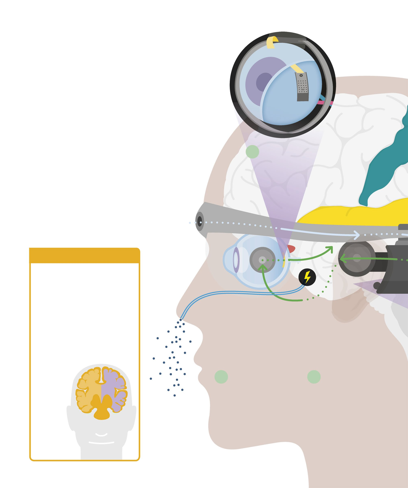
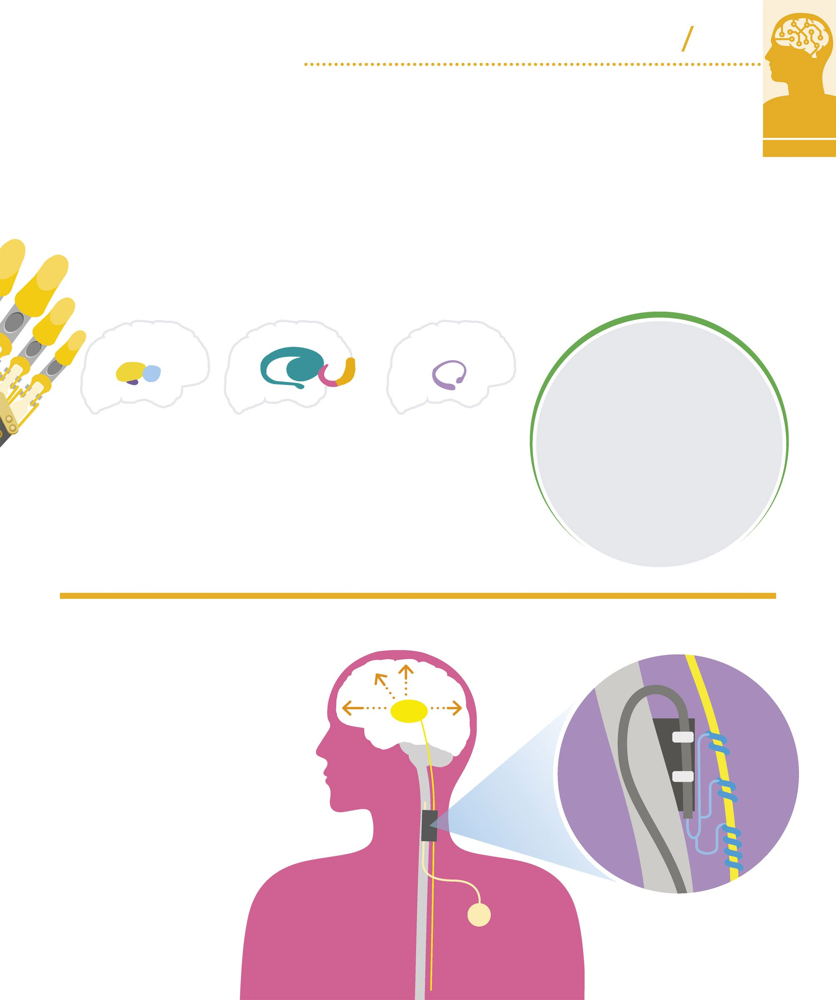
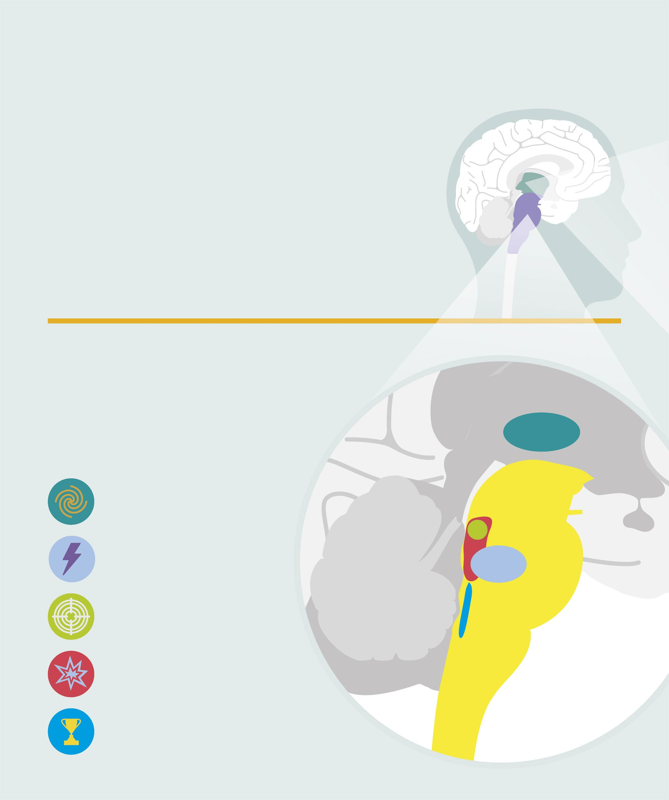
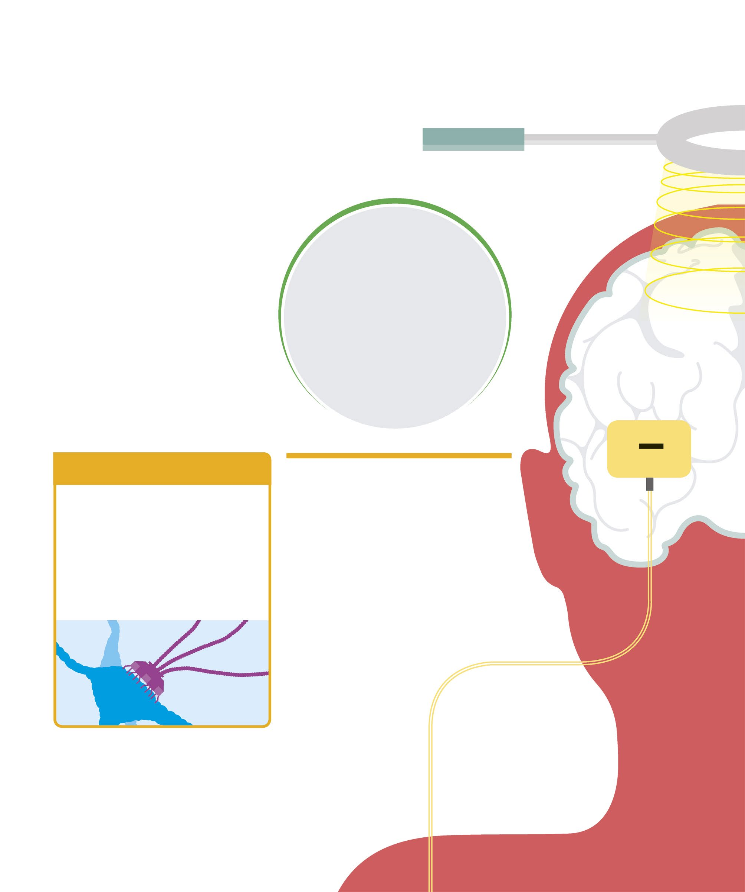
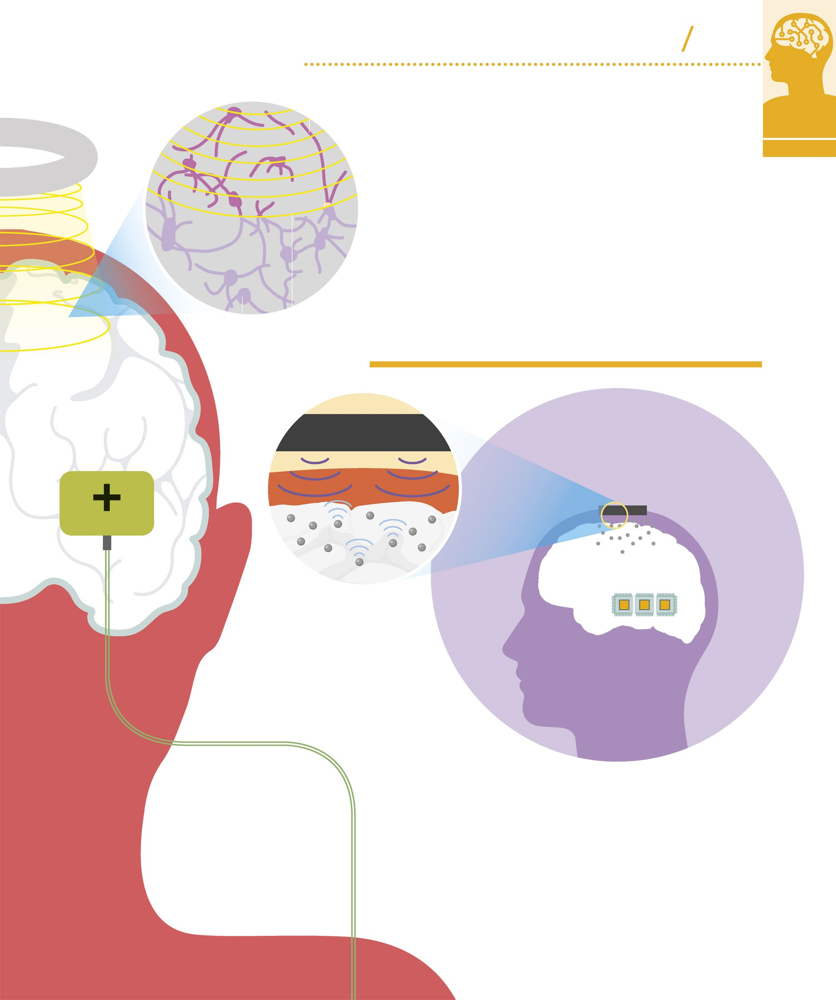

Phần 6 — Bộ Não Của Tương Lai

L A N T
Giác quan
Các thiết bị điện tử mới nhất gần như sánh ngang với mắt và các giác quan khác của chúng ta. Những phiên bản trong tương lai không chỉ có thể khôi phục chức năng cảm giác đã mất mà còn mở rộng phạm vi cảm nhận của chúng ta.
Mảng vi điện cực cấy ghép trong võng mạc
Truyền tải thị giác và thính giác
Y SOR SEN TEX ATO COR SOM
Ốc tai nhân tạo (cochlear implant) được giới thiệu vào những năm 1970, còn implant võng mạc lần đầu xuất hiện năm 2011, nhằm giúp người bị suy giảm thính lực và thị lực nặng. Camera và micro “bắt” ánh sáng và âm thanh, rồi chuyển chúng thành tín hiệu truyền đến một đơn vị xử lý. Quá trình này tạo ra một “bản đồ” kỹ thuật số, được chuyển tiếp qua tín hiệu không dây tới một thiết bị cấy ghép. Thiết bị cấy ghép gửi dữ liệu qua các xung thần kinh đến vùng cảm giác tương ứng trong não bộ.
Dữ liệu truyền tới thiết bị cấy ghép Bộ chuyển tiếp gửi tín hiệu không dây
3
tới ăn-ten của một thiết bị giả trên thành cầu mắt. Ăn-ten truyền tín hiệu qua dây dẫn tới một mảng điện cực cấy bên trong mắt.
Các điện cực kích thích hành khứu giác
VIDE OCA MERA
EX ORT
AUDIT ORYC
Camera ghi lại hình ảnh
A N N E T N A
ESP
Dây dẫn tới các điện cực cấy trong lỗ mũi
Một số người cho rằng họ nhận được thông tin hay nhận thức không thể có nguồn gốc từ các đầu vào cảm giác đã biết. Những trường hợp này có thể được gọi là cảm giác ngoại cảm (extrasensory perception, ESP), nhưng thường có thể giải thích bằng sự hồi tưởng đột ngột một trải nghiệm đã quên hay sự trùng hợp. Nghiên cứu trong tương lai cũng có thể hé lộ khả năng tự nhiên của con người trong việc phát hiện từ trường và các hiện tượng khác.
Implant võng mạc
ST OELECTRODE CT E N N O C E R Electrosniffers I W Một số “mũi điện tử” dùng protein người được sao chép, hoạt động như các thụ thể, tạo ra xung điện truyền dọc theo dây dẫn khi tiếp xúc với một chất nhất định.
Bộ phát chuyển tiếp gửi tín hiệu không dây tới ăn-ten trên cầu mắt
Dây thần kinh thị giác truyền xung từ các tế bào võng mạc sâu hơn đến vỏ não thị giác
Camera video Một hoặc hai camera nhỏ
Dữ liệu video Loại có kích thước bằng điện thoại thông minh
Các bản quét cho thấy hoạt động ở bán cầu não phải mạnh hơn ở những người được cho là có ESP
1
2
được đeo trên gọng kính tạo hình ảnh từ các tia sáng đi vào. Các hình ảnh này được chuyển đổi thành tín hiệu điện rồi gửi qua dây dẫn tới một đơn vị xử lý video di động (VPU).
VPU, đeo trên người nhưng có khả năng cấy ghép, chuyển tín hiệu video của camera thành một “bản đồ” kỹ thuật số gồm các chấm hay điểm ảnh. Thiết bị này gửi dữ liệu qua dây dẫn tới một bộ chuyển tiếp thu-phát lắp trên kính.
Các phân tử mùi và hương vị trong không khí đi vào khoang mũi

NÃO BỘ CỦA TƯƠNG LAI
Implant gửi dữ liệu tới não Mảng điện cực võng mạc là một mạng điện tử
4
DA NHÂN TẠO
gồm một lưới điện tử gửi tín hiệu tới các lớp tế bào sâu hơn trong võng mạc, bỏ qua các tế bào dò tìm ánh sáng bị hỏng. Các tế bào sâu hơn này sinh ra xung thần kinh truyền đến vỏ não thị giác.
Da nhân tạo trong quá trình phát triển chứa các tấm graphene với cảm biến điện tử dạng vòm. Những thay đổi vật lý như nhiệt độ và áp lực làm giãn hoặc ép các cảm biến này để tạo ra tín hiệu điện, sau đó được truyền tới vỏ não cảm giác cơ thể trong não bộ.
Bề mặt bảo vệ chống trượt
Lớp biểu bì chết
Điện tích chuyển động
Cảm biến siêu nhỏ ở lớp trên phát hiện chạm nhẹ và đau
Vùng chạm của não nhận tín hiệu từ da nhân tạo
Tấm graphene với cảm biến dạng vòm
Vùng thính giác của não nhận tín hiệu từ ốc tai nhân tạo
Cảm biến siêu nhỏ ở lớp dưới phát hiện áp lực và nhiệt độ
Điện tích chuyển động
VIS UAL
DA ĐẦU NGÓN TAY
DA ĐIỆN TỬ
CO RTE
X
Bộ thu
Tín hiệu camera truyền tới VPU
Bộ phát
Tín hiệu từ bộ phát truyền không dây tới bộ thu bên trong hộp sọ
Tín hiệu từ bộ thu đi dọc theo dây dẫn tới ốc tai
DÂY DẪN
DÂY THẦN KINH ỐC TAI
Micro chuyển sóng âm thành tín hiệu điện
A E L H C O C
ỐNG TAI
Tín hiệu truyền dọc dây dẫn từ VPU đeo trên người
Các điện cực kích thích trực tiếp sợi thần kinh ốc tai
MÁY ĐÁNH HƠI ĐIỆN TỬ PHÁT HIỆN MÙI VỚI ĐỘ CHÍNH XÁC KHOẢNG 97 PHẦN TRĂM
Ốc tai nhân tạo Nhiều thiết kế ốc tai nhân tạo bỏ qua các phần bị tổn thương của tai ngoài và tai giữa cùng các tế bào cảm giác trong ốc tai của tai trong. Chúng hoạt động bằng cách cung cấp các tín hiệu điện rất nhỏ trực tiếp cho sợi thần kinh ốc tai.

Vỏ não vận động Bộ não
1
Cho đến gần đây, chỉ có não bộ điều khiển cơ và tuyến của cơ thể. Nhưng các thiết bị điện, cơ khí và rô-bốt thế hệ mới—thường được phát triển sau khi mất chi—đang mở rộng khả năng của não.
chính là trung tâm vận động, tạo ra các khuôn mẫu xung thần kinh vận động phối hợp tự nhiên hàng chục cơ để di chuyển cánh tay và bàn tay.
Vỏ não vận động
Vỏ não cảm giác cơ thể
Chân tay giả sinh học
Hiện đã có các chi giả sinh học có động cơ phản ứng với hoạt động của vỏ não vận động, đáp ứng các chỉ thị được gửi dưới dạng xung điện cực nhỏ dọc theo dây thần kinh vận động. Những thiết bị giả ngày càng mạnh mẽ này cũng có thể cung cấp phản hồi cảm giác, giúp hệ thống điều khiển của não duy trì sự điều khiển tinh vi liên tục, mô phỏng sát hơn chi tự nhiên hay bộ phận cơ thể khác.
Tủy sống liên kết với dây thần kinh cánh tay
Dây dẫn truyền tín hiệu số tới cơ chấp hành trong bàn tay
Bàn tay giả sinh học Tới 10 cơ chấp hành
4
Truyền xung Xung thần kinh vận động
Bộ vi xử lý Vi mạch thay đổi
2
3
(các mô-tơ nhỏ, nhẹ) điều khiển cử động của bàn tay và các ngón tay, xoay tại các khớp tự cảm biến.
truyền từ não qua tủy sống dọc các dây thần kinh ngoại biên tới cánh tay và bàn tay.
chuyển các xung thần kinh thành tín hiệu số mà mạch điện và mô-tơ của bộ phận giả sinh học hiểu được.
Xung được chuyển thành tín hiệu số
Bàn tay nhận tín hiệu đã xử lý và chuyển thành cử động
Khuôn mẫu hoạt động thần kinh
Dây thần kinh giữa, quay và trụ
Giao tiếp hai chiều Vỏ não vận động là nơi chủ trì các cử động của bộ phận giả sinh học. Như với chi tự nhiên, các cử động này liên tục được điều chỉnh qua trao đổi với vỏ não cảm giác cơ thể.
Nhận thức tỉnh táo
Dữ liệu cảm giác Các thụ thể trong
5
6
Xung vận động tới bàn tay giả sinh học
Xử lý tiếp theo chuyển các tín hiệu cảm giác sang dạng tự nhiên hơn, có thể được trung tâm xúc giác của não—vỏ não cảm giác cơ thể—giải mã.
mô-tơ, khớp và da nhân tạo của bàn tay tạo ra các phản ứng.
Tín hiệu phản hồi do bàn tay robot tạo ra dưới dạng số
Các xung điện
Tín hiệu cảm giác từ bàn tay giả sinh học

NÃO BỘ CỦA TƯƠNG LAI
Kích thích não sâu (DBS)
Trong DBS, các dây điện cực được cấy vào nhiều vùng khác nhau của não (xem bên dưới) để điều trị nhiều rối loạn. Chúng truyền các xung điện từ một máy phát và pin đặt ở ngực, nối với các điện cực. Một điều khiển từ xa điều chỉnh các xung. Trong DBS thích ứng, các điện cực có cảm biến và máy phát tự động đáp ứng với hoạt động điện của não.
PIN DÙNG TRONG MÁY PHÁT XUNG KÍCH THÍCH NÃO SÂU CÓ THỂ KÉO DÀI ĐẾN KHOẢNG CHÍN NĂM
Đồi thị
Cầu nhạt
Vùng đai dưới thể chai
Vòm não
Vỏ não hốc mắt-trán
KHI NÀO CHI GIẢ SINH HỌC ĐẦU TIÊN ĐƯỢC TẠO RA?
Năm 1993, một nhóm kỹ sư sinh học tại Bệnh viện Margaret Rose ở Edinburgh đã chế tạo cánh tay giả sinh học đầu tiên cho bệnh nhân cụt chi Robert Campbell Aird.
Hạt nhân dưới đồi thị
Hạt nhân đuôi voi
Rối loạn vận động DBS đã được thiết lập vững chắc trong điều trị các vấn đề vận động, chẳng hạn như run và hiện tượng “đông cứng” trong bệnh Parkinson cùng các cơn co giật và co rút ở chứng loạn trương lực cơ.
Rối loạn tâm thần DBS có thể được dùng trong lo âu nặng, trầm cảm và rối loạn ám ảnh cưỡng chế, khi các phương pháp điều trị khác như dùng thuốc đã chứng minh không hiệu quả.
Rối loạn nhận thức Nghiên cứu đang khám phá dùng DBS cho các vấn đề như bệnh Alzheimer, nhắm vào các cấu trúc cụ thể liên quan đến trí nhớ và mạng lưới thần kinh nhận thức.
Kích thích dây thần kinh lang thang
Não giải phóng chất dẫn truyền thần kinh khi bị kích thích
Dây thần kinh lang thang, một trong các dây thần kinh sọ (xem tr.12), kết nối não với các cơ quan trong ngực và bụng. Trong kích thích dây thần kinh lang thang (VNS), một máy phát tín hiệu nhỏ ở ngực, giống như máy tạo nhịp tim, được nối bằng dây với các điện cực quanh dây thần kinh lang thang bên trái ở cổ. Các sợi cảm giác của dây thần kinh được kích thích gửi xung vào não, nơi chúng được phân bổ dọc theo nhiều đường thần kinh khác nhau. VNS chủ yếu được dùng để điều trị các dạng động kinh và trầm cảm.
DÂY THẦN KINH LANG THANG
TỦY SỐNG
Cáp dẫn xung để kích thích dây thần kinh
BAO ĐỘNG MẠCH CẢNH
TỦY SỐNG
Điện cực quấn quanh dây thần kinh
Máy phát tín hiệu gửi xung dọc theo cáp
MÁY PHÁT TÍN HIỆU

Nghiên cứu mới đang hé lộ rằng một số vùng nổi tiếng của não bộ có chức năng bất ngờ. Điều này đặc biệt đúng với các vùng “não thấp”, chẳng hạn như thân não và đồi thị—những vùng từng được cho là phần lớn thụ động và chỉ thực hiện các vai trò tự động.
Khám phá tiềm năng
Các phương pháp quét tiên phong có thể thăm dò những vùng não nằm bên dưới vỏ não, nhằm hiểu đóng góp của chúng vào tư duy và hành vi có ý thức. Các kỹ thuật này gồm đo từ trường não (magnetoencephalography, MEG), phát hiện từ trường do tế bào thần kinh tạo ra (xem tr.43), và chụp cộng hưởng từ chức năng (fMRI) cùng quang phổ hồng ngoại gần (NIRS), giám sát hoạt động não bằng cách phát hiện thay đổi về lưu lượng máu và mức oxy hóa tại chỗ.
Thân não và cảm xúc
Trái với suy nghĩ rằng đây chỉ là vùng duy trì sự sống thông thường, thân não (xem tr.36–37) lại hoạt động tích cực trong hành vi của chúng ta, đặc biệt là cảm xúc. Tâm trạng và cảm giác thậm chí còn được định vị ở các hạt nhân cụ thể (cụm tế bào thần kinh). Những vùng này có thể được tác động bằng điện cực hoặc hóa chất để điều trị các vấn đề như trầm cảm, lo âu và cơn hoảng loạn.
EM ST N AI BR
HẠT NHÂN GAI LƯNG
A R I N B D I M
Gai lưng Hạt nhân này là nguồn chính của serotonin. Vấn đề tại đây có thể dẫn đến lo âu, bồn chồn và tâm trạng chán nản.
HẠT NHÂN CHÂN CẦU
CHẤT XÁM QUANH ỐNG DẪN NÃO
Đốm xanh Sự rối loạn của nơi sản xuất noradrenaline chính này có thể gây cảm xúc dữ dội, căng thẳng và trí nhớ kém.
ĐỐM XANH
S N O P
TIỂU NÃO
CHÂN NÃO BỤNG
Hạt nhân chân cầu Hạt nhân này có vai trò trong chú ý tập trung, sự chú tâm lẫn các nhiệm vụ thể chất, chẳng hạn như cử động các chi.
A L L U D E M
Chất xám quanh ống dẫn não Bao quanh kênh dẫn nước của não, hạt nhân này là một phần chính của hệ thống đối phó với đau.
Chân não bụng Hạt nhân này có chức năng trung tâm trong động lực, học tập và phần thưởng, đồng thời liên quan đến các tình trạng như ADHD.

NÃO BỘ CỦA TƯƠNG LAI
US M A AL TH
Trạm chuyển tiếp của não bộ
Người ta đã biết rõ đồi thị đóng vai trò trạm chuyển tiếp cho mọi thông tin cảm giác đi vào (trừ khứu giác), nhưng hiện nay người ta còn phát hiện thêm cách nó tiền xử lý thông tin này một cách phức tạp và có chọn lọc trước khi truyền đến các vùng cảm giác ở vỏ não. Đồi thị cũng giữ vai trò trung tâm trong điều hòa trạng thái tỉnh táo và, nhờ liên kết với hải mã, đóng góp quan trọng vào trí nhớ. Kích thích não sâu (xem tr.185) ở đồi thị đã được dùng để điều trị các tình trạng như run.
Các hạt nhân của thùy trước, liên quan đến học tập và trí nhớ
Hạt nhân lưng giữa, liên quan đến trí nhớ
Lá tủy trong, một lớp chất trắng
Các hạt nhân bên (đệm), then chốt cho nhận thức thị giác
Hạt nhân sinh đôi giữa liên quan đến thính giác
Hạt nhân trước bụng, liên quan đến vận động tự ý
Các hạt nhân nội lá, liên quan đến ý thức, sự cảnh giác và cảm giác đau
Hạt nhân sinh đôi bên liên quan đến thị giác
Các hạt nhân đồi thị
DÙ CÓ TÁC ĐỘNG KHẮP CƠ THỂ, SCN CHỈ CHỨA 20.000 NƠ-RON VÀ NHỎ HƠN CHỮ O NÀY
Các cuộc điều tra về những hạt nhân ít được biết đến đang hé lộ nhiều bất ngờ. Ví dụ, hạt nhân đệm giúp các trung tâm thị giác lập bản đồ và đo lường một cảnh, cũng như cách chúng ta với lấy các vật thể ở đó.
SCN
ĐÃ PHÁT HIỆN HẾT MỌI BỘ PHẬN CỦA NÃO CHƯA?
Nằm ở vùng dưới đồi, hạt nhân siêu chiasm nhỏ bé (suprachiasmatic nucleus, SCN) thiết lập nhịp sinh học ngày-đêm của cơ thể—chu kỳ ngủ-thức 24 giờ của chúng ta. Đồng hồ sinh học này điều khiển các chức năng cân bằng nội môi thiết yếu, gồm nhiệt độ cơ thể, ăn uống và mức hormone. SCN cũng điều phối hoạt động của nhiều cơ quan. Một ngày nào đó, điện cực hay tia laser siêu nhỏ có thể điều chỉnh các chu kỳ và khuôn mẫu này.
Hạt nhân SCN
Trái tim
Chưa. Năm 2018, kính hiển vi được cải tiến đã phát hiện một vùng nhỏ tại điểm nối giữa não và tủy sống, được đặt tên là hạt nhân endorestiform.
Lá gan
Dạ dày
Buồng trứng

Khi máy tính ngày càng tinh vi, mục tiêu tối hậu là phát triển một cỗ máy vượt qua phép thử Turing, trong đó người trò chuyện với máy không thể nhận ra họ không đang nói chuyện với một con người khác.
Loại bỏ (dropout) Nhiều mạng thần kinh điện tử phân tích và xử lý theo từng giai đoạn. Trong dropout, xác suất một thông tin cụ thể sẽ hữu ích hay không được đánh giá. Nếu không, thông tin đó bị loại bỏ.
Nơ-ron nhân tạo
Mô phỏng não bộ
MẠNG THẦN KINH TIÊU CHUẨN
Các chương trình máy tính gọi là mạng thần kinh cố sao chép cách não hoạt động bằng cách dùng các nơ-ron nhân tạo xếp thành từng lớp. Lấy cảm hứng từ cách con người học, mạng thần kinh có thể thích ứng và thay đổi phản ứng theo thời gian (xem bên phải), một đặc điểm gọi là học máy (machine learning). Để tái tạo sát hơn trí thông minh tổng quát, linh hoạt cao của não người, một cách tiếp cận tiên tiến hơn gồm truy vấn, chỉnh sửa và xóa dữ liệu, một kỹ thuật gọi là quên thích ứng (adaptive forgetting). Ví dụ, dữ liệu ít được dùng ở các tầng sau của mạng, như phản hồi qua hệ thống cho thấy, có thể được cắt bớt hay xóa. Đây gọi là dropout. Giảm dữ liệu dư thừa này tạo ra hệ thống nhanh hơn, nhỏ gọn và đáp ứng nhạy hơn.
ĐẦU VÀO
CÁC LỚP ẨN
ĐẦU RA
Lớp đầu ra Sau khi được
Lớp đầu vào Mạng nhận
Các lớp ẩn Các lớp ẩn
3
1
2
xử lý, dữ liệu đi tới lớp đầu ra. Trong hệ thống nhận diện hình ảnh, đầu ra sẽ là “dự đoán” của ứng dụng về nội dung bức ảnh.
các đầu vào dưới dạng số hoặc giá trị. Ví dụ, trong hệ thống nhận diện hình ảnh, một đầu vào có thể là độ sáng của một điểm ảnh riêng lẻ trong hình ảnh số. Các lớp ẩn xử lý dữ liệu nhận từ lớp đầu vào. Theo thời gian, mạng “học”, điều chỉnh kết quả bằng cách gán trọng số khác nhau cho các giá trị.
HỆ THỐNG DROPOUT
LIỆU RÔ-BỐT CÓ THỐNG TRỊ THẾ GIỚI?
GIỮ LẠI DỮ LIỆU LIÊN QUAN
“AI chiếm quyền” nghe như chuyện khoa học viễn tưởng, nhưng về mặt giả định là có thể. Điều này phần lớn phụ thuộc vào việc máy tính thân thiện ngăn cản những máy tự tiến hóa vượt qua con người.
LOẠI BỎ DỮ LIỆU KHÔNG DÙNG
ĐẦU VÀO
CÁC LỚP ẨN
ĐẦU RA

NÃO BỘ CỦA TƯƠNG LAI
Hình thành mạch trí nhớ
NĂM 2019, MỘT CHƯƠNG TRÌNH AI TÊN PLURIBUS ĐÃ ĐÁNH BẠI 5 KY NHÂN POKER HÀNG ĐẦU
Mô phỏng mạch điện tử số theo não bộ có nghĩa là lưu trữ và gọi lại thông tin. Trong não, việc ghi nhớ liên quan đến việc lặp lại sử dụng các đường dẫn cụ thể giữa các nơ-ron, làm mạnh thêm các điểm nối (khớp thần kinh) để hình thành “mạch trí nhớ”. Trong điện tử, một thiết bị đang được phát triển gọi là điện trở nhớ hay memristor có chức năng tương tự.
CHÚ THÍCH
Điện trở lớn
Điện trở nhỏ
Đầu vào nghỉ ngẫu nhiên
CÁC NƠ-RON
CÁC MEMRISTOR
Trạng thái nghỉ Các xung thần kinh
Trạng thái nghỉ Một tập hợp
1
1
ĐẦU VÀO
Đầu vào nghỉ ngẫu nhiên
truyền ngẫu nhiên giữa một nhóm nơ-ron—chỉ ba nơ-ron được thể hiện ở đây, nhưng có thể có hàng nghìn. Một số điểm nối khớp thần kinh truyền chúng dễ dàng, số khác kém hơn. Không có khuôn mẫu tổng thể cũng như kết quả xác định.
các memristor điện nhận đầu vào bằng nhau và cho tín hiệu đi qua ngay khi chúng đến. Giống như các nơ-ron, không có khuôn mẫu tổng thể và mạch gần như không thay đổi.
NƠ-RON
NƠ-RON
CÁC MEMRISTOR
Các khớp thần kinh truyền các xung thỉnh thoảng
NƠ-RON
R IS M T O E R M
Điện trở lớn
Hoạt động không đều tiếp diễn
Dòng đầu ra bằng đầu vào
ĐẦU RA NGHỈ
ĐẦU RA NGHỈ
Đầu vào có tổ chức
Đầu vào có tổ chức, thường xuyên hơn
ĐẦU VÀO
Sử dụng nhiều hơn củng cố khớp thần kinh
Đường dẫn trí nhớ Lặp lại, ngày càng
Đường dẫn memristor
2
2
các xung thường xuyên theo khuôn mẫu cụ thể biểu thị một cử động hay một dữ kiện đang được ghi nhớ. Các khớp thần kinh được dùng lặp đi lặp lại củng cố liên kết của chúng theo thời gian, đặc điểm gọi là tăng cường dài hạn (long-term potentiation, LTP; xem tr.26–27 và tr.136–137).
Đầu vào mạnh hơn đến một số memristor nhất định, làm thay đổi điện trở của chúng—tương đương điện tử của LTP. Theo thời gian, một khuôn mẫu được nhận diện hình thành khi tín hiệu củng cố đường dẫn này.
CÁC MEMRISTOR
Đầu vào tăng làm giảm điện trở Dòng đầu ra lớn hơn đầu vào
Sử dụng liên tục
Sử dụng liên tục
ĐẦU RA TĂNG
ĐẦU RA TĂNG
củng cố đường dẫn
củng cố đường dẫn
THẦN GIAO ĐIỆN TỬ
Thần giao là sự giao tiếp trực tiếp giả định giữa các não bộ, bỏ qua các giác quan như thị giác. Trong một thí nghiệm dùng trò chơi máy tính xếp khối, chỉ thị xoay khối được thu từ não của hai người chơi dưới dạng kết quả điện não đồ (EEG), rồi truyền qua mũ kích thích từ xuyên sọ (TMS) cho người chơi thứ ba để thực hiện nước đi.
Khối được xoay
EEG
XOAY
TMS
TRÒ CHƠI MÁY TÍNH
NGƯỜI GỬI 1
NGƯỜI GỬI 2
NGƯỜI NHẬN

Y học dùng màng cấy điện cực, từ trường, sóng vô tuyến và hóa chất để điều trị các vấn đề về não. Những công nghệ này cũng có khả năng tăng cường chức năng não bình thường.
QUE TMS
Que đặt gần (nhưng không chạm) hộp sọ của bệnh nhân
TỪ TRƯỜNG
Tăng cường não bộ
“Ép xung” là việc tăng tốc đồng hồ bên trong của máy tính—bộ phối hợp mọi mạch—để đẩy các linh kiện hoạt động nhanh và căng hơn. Giống như máy tính, não dùng các tín hiệu điện rất nhỏ dưới dạng xung thần kinh, làm nảy sinh khả năng não cũng có thể bị ép xung tương tự. Tùy vùng được kích thích, điều này có thể cải thiện sự chú ý và tập trung, xử lý thông tin và trí nhớ.
CÓ AN TOÀN KHI TĂNG TỐC NÃO BỘ KHÔNG?
Cho đến nay, bằng chứng cho thấy tDCS an toàn. Hàng nghìn người khỏe mạnh đã tham gia các thí nghiệm dùng tDCS và không ghi nhận tác dụng phụ nào.
X TE OR C AL R B E R E C
Điện cực tích điện âm có thể ức chế hoạt động thần kinh
ÂM CỰC
RO-BỐT THẦN KINH NANO
Kích thích dòng điện một chiều xuyên sọ
Các nhà nghiên cứu đang phát triển những thiết bị cấy ghép gần bằng kích thước phân tử, giống rô-bốt, để chẳng hạn đưa thuốc y tế. Thế hệ rô-bốt thần kinh chuyên phát các tín hiệu điện được lập trình trong tương lai cũng có thể tăng tốc cả cách nơ-ron hoạt động lẫn cách chúng xử lý xung thần kinh.
Trong kích thích dòng điện một chiều xuyên sọ (tDCS), một dòng điện một chiều cường độ thấp không đổi được dẫn qua não giữa các điện cực dạng miếng dán trên da. Các đợt tDCS đã giúp điều trị trầm cảm và giảm đau. Khả năng tDCS tăng cường nhiều chức năng nhận thức, từ sáng tạo đến suy luận logic, đang được nghiên cứu. Ở đây, tDCS được minh họa dùng đồng thời với TMS, dù trên thực tế hai kỹ thuật này không được dùng cùng lúc.
Dây dẫn tạo thành mạch kín
Ức chế não Trong tDCS cực âm, dòng điện mang tính âm so với hoạt động điện tự nhiên của não. Điều này có tác dụng làm chậm hoặc ức chế tế bào thần kinh, chẳng hạn để giảm hoạt động quá mức.
MỘT THIẾT BỊ GIẢ HẢI MÃ CÓ THỂ CẢI THIỆN HIỆU NĂNG TRÍ NHỚ TỚI 37 PHẦN TRĂM

NÃO BỘ CỦA TƯƠNG LAI
Cuộn dây được bọc trong vỏ nhựa
B Ê N T R O N G V Ỏ N Ã O
Các nơ-ron được kích hoạt
Kích thích từ xuyên sọ
Trong kích thích từ xuyên sọ (TMS), các xung dòng điện đi qua cuộn dây và tạo ra từ tính xuyên qua hộp sọ để tác động lên tế bào não và xung của chúng. Vị trí và chuyển động của cuộn dây, cường độ và thời điểm của xung được điều chỉnh để tác động lên các vùng não cụ thể. TMS đang được thử nghiệm cho nhiều loại tình trạng não và hành vi, cũng như có thể dùng để tăng cường tư duy và các quá trình tinh thần khác.
Xung từ Khi hoạt động, các cuộn từ thay đổi cực tính và tạo ra xung từ xuyên qua da đầu. Điều này tạo ra hoạt động điện ở các nơ-ron xung quanh.
Từ trường
Các nơ-ron nghỉ
Vùng não đang được kích thích
M Ạ N G H Ạ T T H Ầ N K I N H
Sóng vô tuyến cung cấp năng lượng
Điện cực tích điện dương có thể kích thích hoạt động thần kinh trong não
Các hạt thần kinh trên bề mặt vỏ não tạo liên kết với nơ-ron
Miếng dán da để cấp năng lượng và giám sát không dây
Các hạt, màng lưới hay chuỗi thần kinh được cấy ghép
DƯƠNG CỰC
HẢI MÃ NHÂN TẠO
Hạt thần kinh Các nhà khoa học đang phát triển kỹ thuật trong đó hàng chục nghìn “hạt thần kinh” mỗi hạt độc lập kết nối với một nơ-ron đơn lẻ và gửi dữ liệu tới một miếng dán điện tử trên da đầu.
Bộ vi xử lý và chip nhớ được nhúng
Dòng điện không đổi được cung cấp từ pin
Chip nhớ
Khả năng của thiết bị điện tử có thể được mở rộng bằng cách thêm bộ nhớ, thường dưới dạng vi mạch. Não bộ cũng có thể được nâng cấp tương tự. Các thiết bị siêu nhỏ nhận, lưu và gửi dữ liệu đang được tạo hình dạng màng lưới, chuỗi và hạt cực mịn. Được cấy trên hoặc trong vỏ não, chúng có thể phát triển liên kết với từng tế bào thần kinh và hỗ trợ tư duy cùng trí nhớ. Hiện nay, chip đã có thể cải thiện các nhiệm vụ trí nhớ của hải mã như nhớ lại dài hạn.
Kích thích não tDCS cực dương dùng dòng điện dương để tăng tốc hoạt động của tế bào thần kinh. Vị trí các điện cực trên da quyết định vùng não nào được kích thích. Thí nghiệm cho thấy hiệu ứng có thể kéo dài ngay cả sau khi dòng điện ngừng.

Não bộ
Việc công chúng sử dụng World Wide Web bắt đầu từ năm 1991. Giờ đây, việc phát triển một hệ thống có thể cho phép não bộ chúng ta kết nối với Đám mây là một khả năng.
Giao diện Não/Đám mây
Công nghệ đang chạy đua để kết nối não người vào mạng lưới điện tử khổng lồ của Đám mây thông qua giao diện Não/Đám mây (B/CI). Một ngày nào đó, con người có thể truy cập một kho kiến thức khổng lồ của nhân loại và điện tử, nhưng nhiều thách thức phải được vượt qua. Chẳng hạn, tốc độ truyền dữ liệu phải được kiểm soát, nếu không thông tin đầu vào có thể quá lớn đến mức làm quá tải hoàn toàn ý thức của chúng ta. Và ngay từ đầu, việc bảo vệ trọn vẹn từng bộ não con người là điều thiết yếu.
Các “nông trại” chứa giá máy chủ lớn hơn nhiều thị trấn
Đám mây Đám mây gồm các cơ sở dữ liệu khổng lồ,
1
các nông trại máy chủ, bộ vi xử lý siêu lớn và siêu máy tính. Chúng phối hợp theo thời gian thực để nhận, lưu trữ, quản lý và gửi thông tin tới hàng triệu máy tính cá nhân cùng các thiết bị khác được liên kết.
TRUNG TÂM DỮ LIỆU
Thách thức thiết kế Việc thiết kế B/CI đòi hỏi nhiều yếu tố then chốt: kết nối trực tiếp với não người, phương pháp truyền hoạt động thần kinh của não không dây vào một mạng máy tính cục bộ, và xác định cách mạng này tương tác với Đám mây.
Việc dùng máy tính cá nhân có thể phai nhạt khi giao diện Não/Đám mây cá nhân chiếm lĩnh
ĐÁM MÂY LÀ GÌ?
Đám mây là một mạng lưới khổng lồ, đan xen toàn cầu gồm các thiết bị điện tử lớn. Thông qua nó, phần mềm và dịch vụ có thể chạy trên internet thay vì trên máy tính của bạn.
Giao tiếp với Đám mây Máy tính và thiết bị thông minh,
2
có thể kết nối với nhau và với internet, giao tiếp với Đám mây. Số thiết bị thông minh được nối với internet hiện nhiều hơn gấp hơn hai lần số người trên thế giới. Nếu não người cũng có thể tham gia Đám mây, nơi đây sẽ trở thành một không gian còn nhộn nhịp hơn.